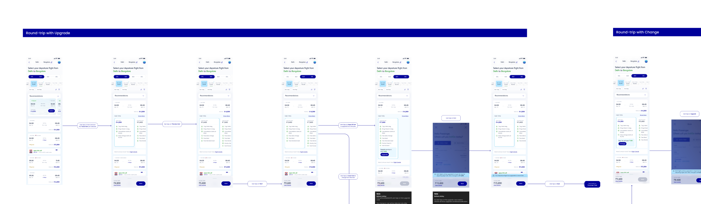
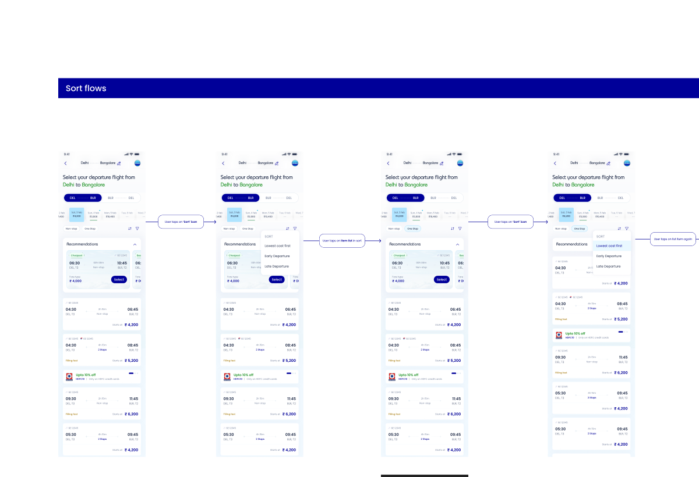
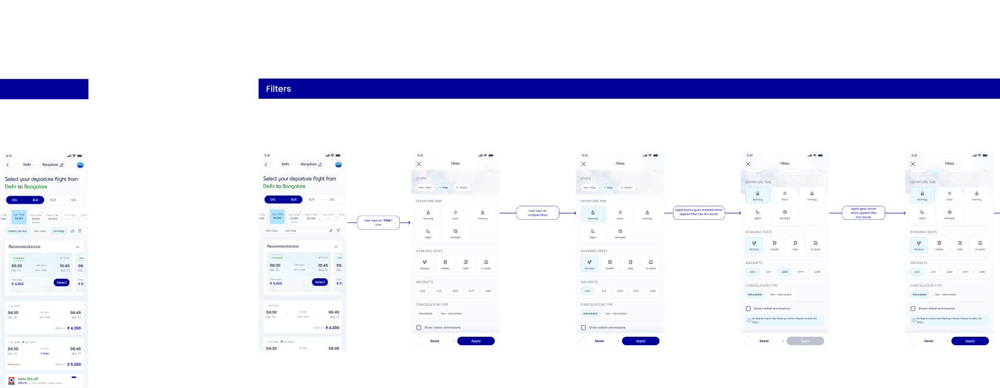
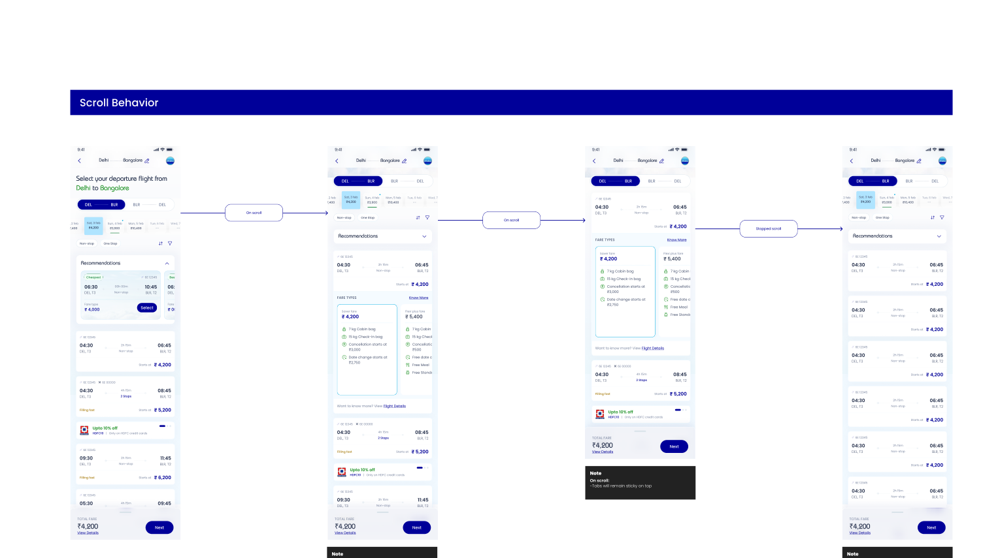
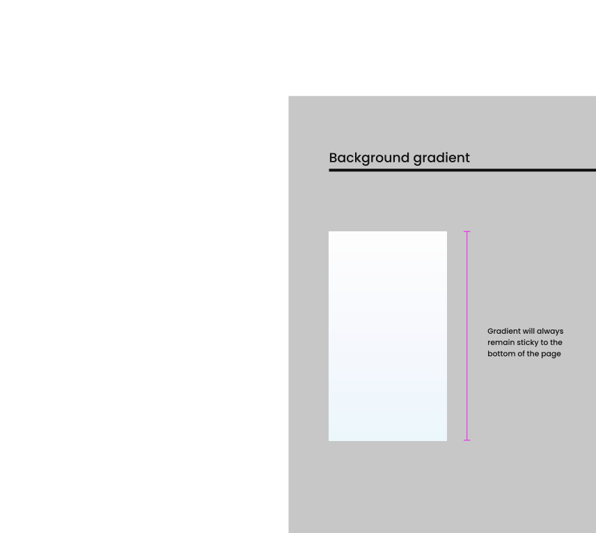

The problem
The search results page is where a flight booking is won or lost. Every user passes through it, and it has to answer three questions at once: which flight, at what fare, for whom? IndiGo's SRP carries unusual weight because a single result row hides an entire matrix — multiple fare families per flight, round-trip pairing, upgrade and change journeys, and special fare types (Senior Citizen, family combinations of Adult + Child + Infant) that alter both pricing and eligibility. [Add the trigger for this work: redesign? new fare families? conversion drop-off?]
The brief: design an SRP that lets price-driven travelers scan and select in seconds, while every complex path — round-trip pairing, fare upgrades, itinerary changes, special fares, sort and filters — stays one predictable step away.
Scope
This was not a single screen but a system: I designed and documented the complete SRP behavior across one-way and round-trip selection, round-trip with upgrade, round-trip with change, special fares, Senior Citizen fares, mixed-passenger searches (Adult + Child + Infant), offers, modify search, flight details, fare details, trips, sort, and filters — plus motion and rendering specs (scroll behavior, sticky background gradient) so engineering could build without guesswork.
Key design decisions
1 · Round-trip as one continuous decision, not two searches
Round-trip is IndiGo's hardest SRP problem: the user must hold two flight choices and one combined price in their head. The flow keeps departure and return selection in a single continuous journey — pick the departure fare, transition directly into return results, and watch the combined total build in the persistent bottom bar. The user never loses the thread of "what am I paying in total?", which is the number that actually decides the booking.

2 · Upgrades and changes reuse the SRP instead of forking it
Post-selection journeys — upgrading a fare family or changing a flight — are usually bolted on as separate flows that look and behave differently from search. I designed both to re-enter the same SRP pattern: same result cards, same fare comparison, same bottom bar. Users apply a mental model they already learned, and engineering ships one component set instead of three.

3 · Sort and filters tuned for one dominant behavior: price scanning
Sort and filter flows were designed around how flight shoppers actually behave — most sort by price and filter by time-of-day, and they do it repeatedly while comparing. Sort is a one-tap toggle on the results themselves; filters live in a dedicated sheet with clear applied-state feedback so users always know why the list looks the way it does, and a reset path so experimentation is safe.


4 · Edge cases designed as first-class flows, not footnotes
Senior Citizen fares, special fares, and Adult + Child + Infant searches each change eligibility, pricing, and messaging on the SRP. Rather than leaving these to engineering interpretation, each got its own documented flow with the exact card states, fare labels, and validation behavior. The measure of an SRP isn't the happy path — it's whether a grandmother booking with an infant grandchild sees prices she can trust.
Craft & engineering handoff


- Annotated flows, not static screens. Every transition carries a "user taps on…" note, so the flowchart doubles as the interaction spec.
- Behavior notes travel with the screens. Dark note cards document conditional logic (fare availability, state changes) exactly where they apply.
- Documented motion and scroll physics — header collapse and sticky gradient — closed the usual gap between design intent and shipped feel.
Outcome
[The section that sells this project — add: search-to-select conversion, fare-family upsell rate, filter/sort engagement, reduction in engineering back-and-forth, or QA defect rate against the spec. Even a stakeholder quote works.]
Reflection
[One honest limitation + next step — e.g., "The fare matrix still relies on user patience for 3+ fare families; I'd test a comparison view next" or what usability testing revealed.]